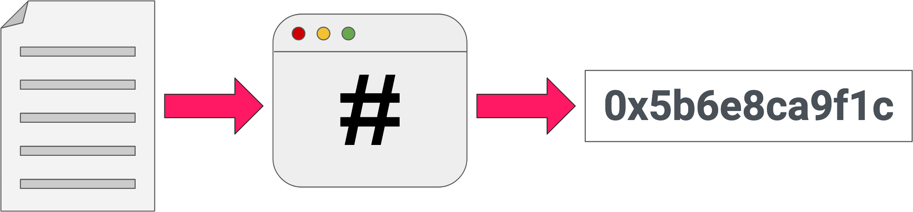
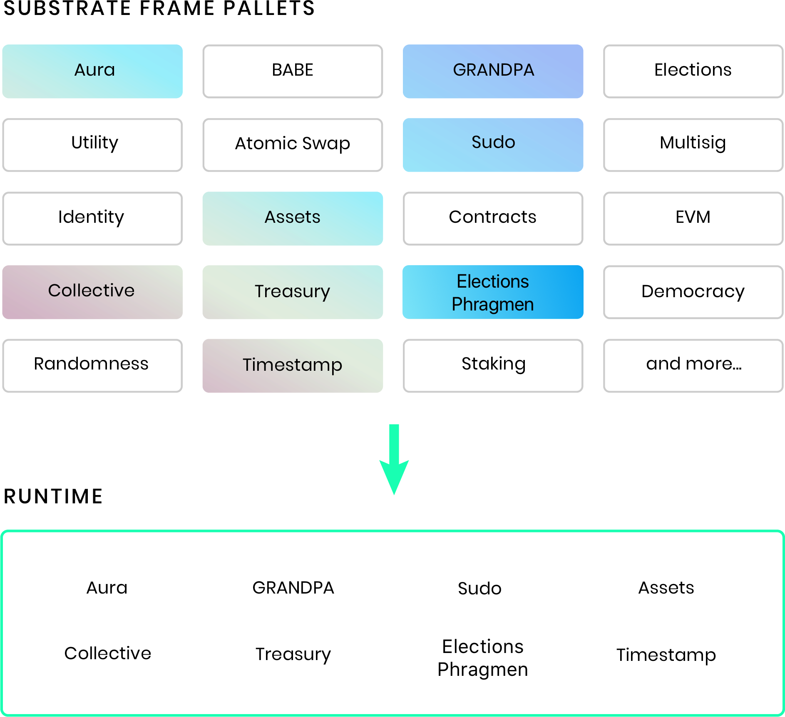
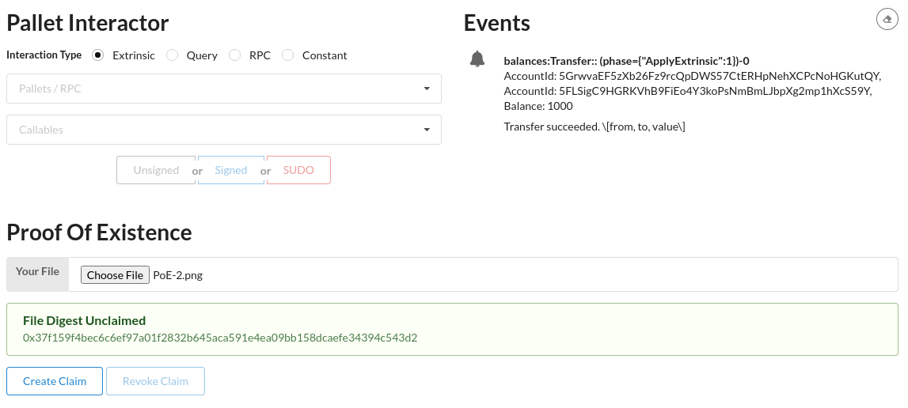
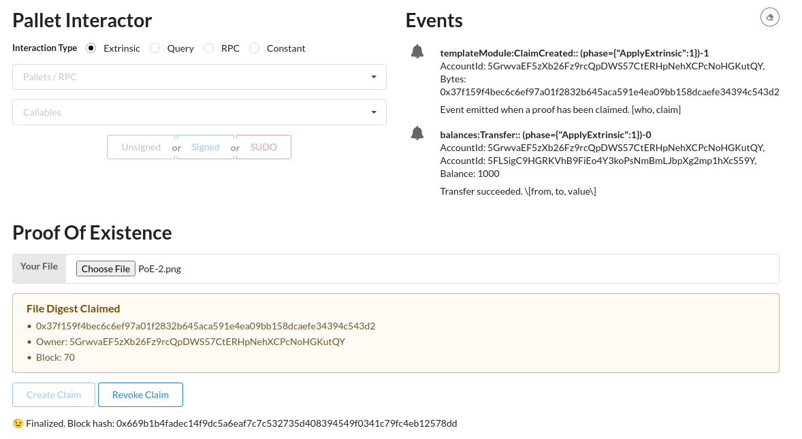

Create a custom pallet using macros
This tutorial illustrates how to create a custom pallet for a Substrate runtime using macros that are part of the FRAME development environment.
For this tutorial, you'll build a simple proof of existence application. Proof of existence is an approach to validating the authenticity and ownership of a digital object by using the object information stored on the blockchain. Because the blockchain associates a timestamp and signature with the object, the blockchain record can be used to verify—to serve as proof—that a particular object existed at a specific date and time. It can also verify who the owner of a record was at that date and time.
Digital objects and hashes
Instead of individual files, the blockchain stores digital records using a cryptographic hash. The hash enables the blockchain to store files of arbitrary size efficiently by using a small and unique hash value. Because any change to a file would result in a different hash, users can prove the validity of a file by computing the hash and comparing that hash with the hash stored on chain.

Digital objects and account signatures
Blockchains use public keys to map digital identities to accounts that have private keys. The blockchain records the account you use to store the hash for a digital object as part of the transaction. Because the account information is stored as part of the transaction, the controller of the account can later prove ownership as the person who initially uploaded the file.
How much time do you need to complete this tutorial?
This tutorial requires compiling Rust code and takes approximately one to two hours to complete.
Before you begin
For this tutorial, you download and use working code. Before you begin, verify the following:
-
You have configured your environment for Substrate development by installing Rust and the Rust toolchain.
-
You have completed the Build a local blockchain and have the node and front-end templates installed.
-
You are generally familiar with software development and use command-line interfaces.
By completing this tutorial, you will accomplish the following objectives:
-
Learn the basic structure of a custom pallet.
-
See examples of how Rust macros simplify the code you need to write.
-
Start a blockchain node that contains a custom pallet.
-
Add front-end code that exposes the proof-of-existence pallet.
Design the application
The proof of existence application exposes the following callable functions:
-
create_claim()allows a user to claim the existence of a file by uploading a hash. -
revoke_claim()allows the current owner of a claim to revoke ownership.
These functions only require you to store information about the proofs that have been claimed, and who made those claims.
Build a custom pallet
The Substrate node template has a FRAME-based runtime. FRAME is a library of code that allows you to build a Substrate runtime by composing modules called "pallets". You can think of the pallets as individual pieces of logic that define what your blockchain can do. Substrate provides you with a number of pre-built pallets for use in FRAME-based runtimes.

This tutorial shows you how to create your own FRAME pallet to be included in your custom blockchain.
Set up scaffolding for your pallet
This tutorial demonstrates how to create a custom pallet from scratch. Therefore, the first step is to remove some files and content from the files in the node template directory.
-
Open a terminal shell and navigate to the root directory for the node template.
-
Change to the
pallets/template/srcdirectory by running the following command:
bash
cd pallets/template/src
- Remove the following files:
bash
benchmarking.rs
mock.rs
tests.rs
- Open the
lib.rsfile in a text editor.
This file contains code that you can use as a template for a new pallet. You won't be using the template code in this tutorial. However, you can review the template code to see what it provides before you delete it.
-
Delete all of the lines in the
lib.rsfile. -
Add the macro required to build both the native Rust binary (
std) and the WebAssembly (no_std) binary.
rust
#![cfg_attr(not(feature = "std"), no_std)]
All of the pallets used in a runtime must be set to compile with the no_std features.
- Add a skeleton set of pallet dependencies and macros that the custom pallet requires by copying the following code:
```rust // Re-export pallet items so that they can be accessed from the crate namespace. pub use pallet::*;
#[frame_support::pallet]
pub mod pallet {
use frame_support::pallet_prelude::;
use frame_system::pallet_prelude::;
use sp_std::vec::Vec; // Step 3.1 will include this in Cargo.toml
#[pallet::config] // <-- Step 2. code block will replace this.
#[pallet::event] // <-- Step 3. code block will replace this.
#[pallet::error] // <-- Step 4. code block will replace this.
#[pallet::pallet]
#[pallet::generate_store(pub(super) trait Store)]
#[pallet::generate_storage_info]
pub struct Pallet<T>(_);
#[pallet::storage] // <-- Step 5. code block will replace this.
#[pallet::hooks]
impl<T: Config> Hooks<BlockNumberFor<T>> for Pallet<T> {}
#[pallet::call] // <-- Step 6. code block will replace this.
} ```
You now have a framework that includes placeholders for events, errors, storage, and callable functions.
- Save your changes.
Configure the pallet to emit events
Every pallet has a Rust "trait" called Config.
You use this trait to configure the settings that your specific pallet requires.
For this tutorial, the configuration setting enables the pallet to emit events.
To define the Config trait for the proof-of-existence pallet:
-
Open the
pallets/template/src/lib.rsfile in a text editor. -
Replace the
#[pallet::config]line with the following code block:
rust
/// Configure the pallet by specifying the parameters and types on which it depends.
#[pallet::config]
pub trait Config: frame_system::Config {
/// Because this pallet emits events, it depends on the runtime's definition of an event.
type Event: From<Event<Self>> + IsType<<Self as frame_system::Config>::Event>;
}
- Save your changes.
Implement pallet events
Now that you've configured the pallet to emit events, you are ready to define those events. As described in Design the application, the proof-of-existence pallet emits an event under the following conditions:
- When a new proof is added to the blockchain.
- When a proof is revoked.
Each event also displays an AccountId to identify who triggered the
event and the proof-of-existence data (as Vec<u8>) that is being stored or removed.
By convention, each event includes an array with descriptive names for its parameters.
To implement the pallet events:
-
Open the
pallets/template/src/lib.rsfile in a text editor. -
Replace the
#[pallet::event]line with the following code block:
rust
// Pallets use events to inform users when important changes are made.
// Event documentation should end with an array that provides descriptive names for parameters.
// https://docs.substrate.io/v3/runtime/events-and-errors
#[pallet::event]
#[pallet::generate_deposit(pub(super) fn deposit_event)]
pub enum Event<T: Config> {
/// Event emitted when a proof has been claimed. [who, claim]
ClaimCreated(T::AccountId, Vec<u8>),
/// Event emitted when a claim is revoked by the owner. [who, claim]
ClaimRevoked(T::AccountId, Vec<u8>),
}
- Save your changes.
Include sp-std library
You might notice that the proof-of-existence pallet uses the Vec<u8> type.
This type is included in the std Rust library.
However, you cannot use the std library for pallet development.
Instead, the proof-of-existence pallet uses the sp-std crate to declare the Vec<u8> type under the mod pallet section:
use sp_std::vec::Vec;
The sp-std crate provides many standard Rust library functions modified to be compatible with no_std configuration.
To use the sp-std crate, you must update the pallet dependencies in the Cargo.toml file.
To add the sp-std crate to the pallet:
-
Open the
pallets/template/Cargo.tomlfile in a text editor. -
Add the following
sp-stddependencies section to the file:
toml
[dependencies.sp-std]
default-features = false
git = 'https://github.com/paritytech/substrate.git'
tag = 'monthly-2021-11-1' # or the latest monthly
version = '4.0.0-dev' # or the latest version
- Add the
sp-stdcrate to the list of features.
toml
[features]
default = ['std']
std = [
# -- snip --
'sp-std/std',
]
- Save your changes and close the file.
Include pallet errors
The events you defined indicate when calls to the pallet have completed successfully. Errors indicate when a call has failed, and why it has failed. For this tutorial, you define the following error conditions:
-
An attempt to claim a proof that has already been claimed.
-
An attempt to revoke a proof that does not exist.
-
An attempt to revoke a proof that has been claimed by another account.
To implement the errors for the proof-of-existence pallet:
-
Open the
pallets/template/src/lib.rsfile in a text editor. -
Replace the
#[pallet::error]line with the following code block:
rust
#[pallet::error]
pub enum Error<T> {
/// The proof has already been claimed.
ProofAlreadyClaimed,
/// The proof does not exist, so it cannot be revoked.
NoSuchProof,
/// The proof is claimed by another account, so caller can't revoke it.
NotProofOwner,
}
- Save your changes.
Implement a storage map for stored items
To add a new proof to the blockchain, the proof-of-existence pallet requires a storage mechanism.
To address this requirement, you can create a hash map that maps each proof to its owner and records the block number when the proof was made.
To create this hash map, you can use the FRAME StorageMap trait.
To implement storage for the proof-of-existence pallet:
-
Open the
pallets/template/src/lib.rsfile in a text editor. -
Replace the
#[pallet::storage]line with the following code block:
rust
#[pallet::storage]
pub(super) type Proofs<T: Config> = StorageMap<_, Blake2_128Concat, Vec<u8>, (T::AccountId, T::BlockNumber), ValueQuery>;
- Save your changes.
Implement callable functions
The proof-of-existence pallet exposes two callable functions to users:
-
create_claim()allows a user to claim the existence of a file with a proof. -
revoke_claim()allows the owner of a claim to revoke the claim.
These functions use the StorageMap to implement the following logic:
- If a proof has an owner and a block number, then it has been claimed.
- If a proof does not have an owner and a block number, then it is available to be claimed and written to storage.
To implement this logic in the proof-of-existence pallet:
-
Open the
pallets/template/src/lib.rsfile in a text editor. -
Replace the
#[pallet::call]line with the following code block:
```rust
// Dispatchable functions allow users to interact with the pallet and invoke state changes.
// These functions materialize as "extrinsics", which are often compared to transactions.
// Dispatchable functions must be annotated with a weight and must return a DispatchResult.
#[pallet::call]
impl
// Verify that the specified proof has not already been claimed.
ensure!(!Proofs::<T>::contains_key(&proof), Error::<T>::ProofAlreadyClaimed);
// Get the block number from the FRAME System pallet.
let current_block = <frame_system::Pallet<T>>::block_number();
// Store the proof with the sender and block number.
Proofs::<T>::insert(&proof, (&sender, current_block));
// Emit an event that the claim was created.
Self::deposit_event(Event::ClaimCreated(sender, proof));
Ok(())
}
#[pallet::weight(10_000)]
pub fn revoke_claim(
origin: OriginFor<T>,
proof: Vec<u8>,
) -> DispatchResult {
// Check that the extrinsic was signed and get the signer.
// This function will return an error if the extrinsic is not signed.
// https://docs.substrate.io/v3/runtime/origins
let sender = ensure_signed(origin)?;
// Verify that the specified proof has been claimed.
ensure!(Proofs::<T>::contains_key(&proof), Error::<T>::NoSuchProof);
// Get owner of the claim.
let (owner, _) = Proofs::<T>::get(&proof);
// Verify that sender of the current call is the claim owner.
ensure!(sender == owner, Error::<T>::NotProofOwner);
// Remove claim from storage.
Proofs::<T>::remove(&proof);
// Emit an event that the claim was erased.
Self::deposit_event(Event::ClaimRevoked(sender, proof));
Ok(())
}
} ```
-
Save your changes and close the file.
-
Check that your code compiles by running the following command:
bash
cargo check -p node-template-runtime
There is a full Node Template solution here to use as a reference if you're stuck. Check the commit diff from the base template for the exact changes. />
Build the runtime with your new pallet
After you've copied all of the parts of the proof-of-existence pallet into the pallets/template/lib.rsfile, you are ready to compile and start the node.
To compile and start the updated Substrate node:
-
Open a terminal shell.
-
Change to the root directory for the node template.
-
Compile the node template by running the following command:
bash
cargo build --release
- Start the node in development mode by running the following command:
bash
./target/release/node-template --dev
The --dev option starts the node using the predefined development chain specification.
Using the --dev option ensures that you have a clean working state any time you stop and restart the node.
- Verify the node produces blocks.
Build a custom front-end component
Now that you have a new blockchain running with the custom proof-of-existence pallet, let's add a custom React component to the front-end template. This React component enables you to expose the proof-of-existence capabilities and interact with the new pallet you created.
Add your custom react component
-
Open a new terminal shell on your computer, then change to the root directory where you installed the front-end template.
-
Open the
src/TemplateModule.jsfile in a text editor. -
Delete the entire contents of that file.
-
Copy and paste the following code into the
src/TemplateModule.jsfile:
```javascript // React and Semantic UI elements. import React, { useState, useEffect } from 'react' import { Form, Input, Grid, Message } from 'semantic-ui-react'
// Pre-built Substrate front-end utilities for connecting to a node // and making a transaction. import { useSubstrate } from './substrate-lib' import { TxButton } from './substrate-lib/components'
// Polkadot-JS utilities for hashing data. import { blake2AsHex } from '@polkadot/util-crypto'
// Main Proof Of Existence component is exported.
export function Main(props) {
// Establish an API to talk to the Substrate node.
const { api } = useSubstrate()
// Get the selected user from the AccountSelector component.
const { accountPair } = props
// React hooks for all the state variables we track.
// Learn more at: https://reactjs.org/docs/hooks-intro.html
const [status, setStatus] = useState('')
const [digest, setDigest] = useState('')
const [owner, setOwner] = useState('')
const [block, setBlock] = useState(0)
// Our FileReader() which is accessible from our functions below.
let fileReader
// Takes our file, and creates a digest using the Blake2 256 hash function
const bufferToDigest = () => {
// Turns the file content to a hexadecimal representation.
const content = Array.from(new Uint8Array(fileReader.result))
.map(b => b.toString(16).padStart(2, '0'))
.join('')
const hash = blake2AsHex(content, 256)
setDigest(hash)
}
// Callback function for when a new file is selected.
const handleFileChosen = file => {
fileReader = new FileReader()
fileReader.onloadend = bufferToDigest
fileReader.readAsArrayBuffer(file)
}
// React hook to update the owner and block number information for a file
useEffect(() => {
let unsubscribe
// Polkadot-JS API query to the `proofs` storage item in our pallet.
// This is a subscription, so it will always get the latest value,
// even if it changes.
api.query.templateModule
.proofs(digest, result => {
// Our storage item returns a tuple, which is represented as an array.
setOwner(result[0].toString())
setBlock(result[1].toNumber())
})
.then(unsub => {
unsubscribe = unsub
})
return () => unsubscribe && unsubscribe()
// This tells the React hook to update whenever the file digest changes
// (when a new file is chosen), or when the storage subscription says the
// value of the storage item has updated.
}, [digest, api.query.templateModule])
// We can say a file digest is claimed if the stored block number is not 0
function isClaimed() {
return block !== 0
}
// The actual UI elements which are returned from our component.
return (
<Grid.Column>
<h1>Proof of Existence</h1>
{/* Show warning or success message if the file is or is not claimed. */}
<Form success={!!digest && !isClaimed()} warning={isClaimed()}>
<Form.Field>
{/* File selector with a callback to `handleFileChosen`. */}
<Input
type="file"
id="file"
label="Your File"
onChange={e => handleFileChosen(e.target.files[0])}
/>
{/* Show this message if the file is available to be claimed */}
<Message success header="File Digest Unclaimed" content={digest} />
{/* Show this message if the file is already claimed. */}
<Message
warning
header="File Digest Claimed"
list={[digest, `Owner: ${owner}`, `Block: ${block}`]}
/>
</Form.Field>
{/* Buttons for interacting with the component. */}
<Form.Field>
{/* Button to create a claim. Only active if a file is selected, and not already claimed. Updates the `status`. */}
<TxButton
accountPair={accountPair}
label={'Create Claim'}
setStatus={setStatus}
type="SIGNED-TX"
disabled={isClaimed() || !digest}
attrs={{
palletRpc: 'templateModule',
callable: 'createClaim',
inputParams: [digest],
paramFields: [true],
}}
/>
{/* Button to revoke a claim. Only active if a file is selected, and is already claimed. Updates the `status`. */}
<TxButton
accountPair={accountPair}
label="Revoke Claim"
setStatus={setStatus}
type="SIGNED-TX"
disabled={!isClaimed() || owner !== accountPair.address}
attrs={{
palletRpc: 'templateModule',
callable: 'revokeClaim',
inputParams: [digest],
paramFields: [true],
}}
/>
</Form.Field>
{/* Status message about the transaction. */}
<div style={{ overflowWrap: 'break-word' }}>{status}</div>
</Form>
</Grid.Column>
)
}
export default function TemplateModule(props) { const { api } = useSubstrate() return api.query.templateModule && api.query.templateModule.proofs ? ( ) : null } ```
-
Save your changes and close the file.
-
Start the front-end template by running the following command:
bash
yarn start
This will open up a new tab with the front-end serving at http://localhost:8000.
Submit a proof
To test the proof-of-existence pallet using the new front-end component:
- Find the component at the bottom of the page.
- Click Choose file and select any file on your computer.
The proof-of-existence pallet generates the hash for the selected file and displays it in the File Digest field.
Because the file does not have an owner or block number, it is available to claim.
- Click Create Claim to take ownership of the file.

Clicking Create Claim calls the create_claim function in the custom proof-of-existence pallet.
The front-end component displays the file digest, account identifier, and block number for the completed transaction.
- Verify the claim is successful and a new
claimCreatedevent appears in the Events component.

The front-end component recognizes that the file is now claimed, and gives you the option to revoke the claim.
Remember, only the owner can revoke the claim. If you select another user account, the revoke option is disabled.
Next steps
In this tutorial, you learned the basics of how to create a new custom pallet, including:
-
How to add events, errors, storage, and callable functions to a custom pallet.
-
How to integrate the custom pallet into the runtime.
-
How to compile and start a node that includes your custom pallet.
-
How you can add a React front-end component to expose the custom pallet to users.
This tutorial covered the basics without diving too deeply into the code. However, there's much more you can do as you work toward building your own fully-customized blockchain. Custom pallets enable you to expose the features you want your blockchain to support.
To learn more about what's possible by creating custom pallets, explore the FRAME documentation and the how-to guides. For a more challenging version of this tutorial, move onto the Substrate Kitties tutorial.